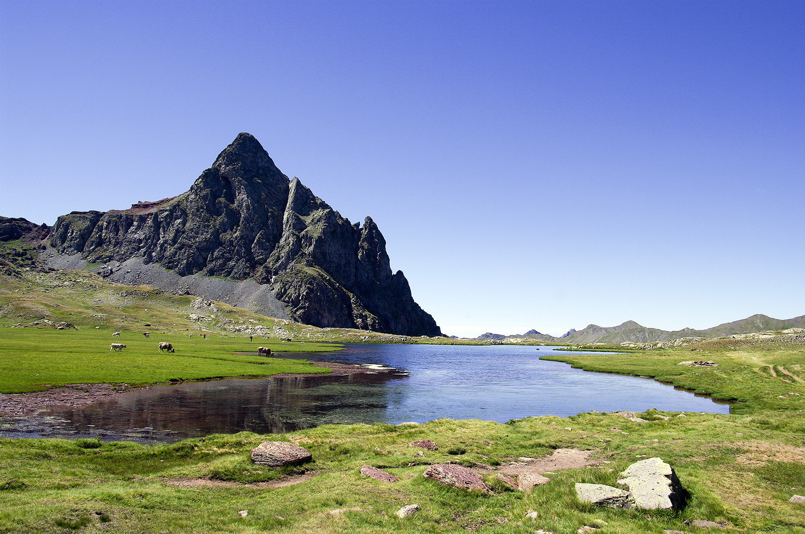

Ruta a los Ibones de Anayet
Una excursión por el valle de Tena que nos lleva hasta unos ibones de alta montaña, con unas vistas espectaculares del pico Anayet.

Información de la ruta
- Ubicación: Valle de Tena, Huesca
- Inicio: Zona de Anayet, Formigal
- Distancia: 10-12 km aproximadamente (ida y vuelta)
- Duración: Entre 4 y 5 horas
- Dificultad: Moderada en condiciones estivales
- Tipo: Ida y vuelta
Descripción del recorrido
La ruta a los Ibones de Anayet es una de las excursiones más conocidas del valle de Tena. El recorrido habitual comienza en la zona de Anayet, junto a la estación de esquí de Formigal.
Desde el punto de partida seguimos un sendero que asciende progresivamente por el barranco de Culivillas. Durante el camino encontramos praderas, pequeños arroyos y un paisaje cada vez más abierto.
La subida tiene algunos tramos con bastante pendiente, por lo que conviene tomársela con calma. A medida que ganamos altura, las vistas de las montañas son cada vez más impresionantes.
Finalmente llegamos a la zona de los ibones, situada a los pies del pico Anayet. Desde aquí podemos disfrutar de unas vistas espectaculares del entorno y, si el día está despejado, del Midi d'Ossau.
Después de descansar y disfrutar del paisaje, regresamos por el mismo camino hasta el punto de inicio.
Qué hace especial esta ruta
Uno de los principales atractivos es el contraste entre las praderas de montaña, los ibones y las paredes rocosas del pico Anayet.
También destacan las vistas hacia otras montañas del Pirineo, especialmente en los días despejados. Es una excursión muy recomendable para quienes disfrutan de los paisajes de alta montaña.
Consejos para la excursión
Es importante llevar botas o zapatillas de montaña con buen agarre, suficiente agua, comida y ropa de abrigo, incluso durante el verano.
Antes de comenzar debemos consultar la previsión meteorológica, ya que en alta montaña el tiempo puede cambiar rápidamente y las tormentas pueden resultar peligrosas.
Esta ruta es más exigente que la excursión corta al Ibón de Plan. Con nieve o hielo las condiciones cambian considerablemente, por lo que no debe considerarse una ruta de senderismo sencilla durante todo el año.
← Volver a las rutas